Introduction - PANELS AND FRAME
- Path
- Procedures > 72 PANELS AND FRAME > Introduction - PANELS AND FRAME
- Kind
- repair procedure (removal / refitting; the operation number is the code)
- Applies to
- all engines; all production periods
- Interactive page
- https://sloeber94.github.io/elrnDB-a156/en/#/3239547
Applies to: all engines; all production periods
REPAIRING THE VEHICLE
Vehicle identification data
Location of plates on the vehicle
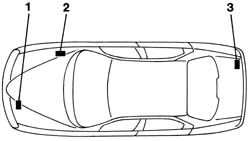
Towing points
Location of tow hook threaded sockets
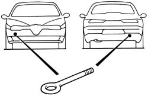
Vehicle lifting points
Position of vehicle lifting points
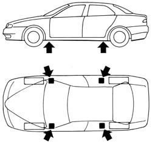
Vehicle repair operating cycles
Pulling the bodyshell
The bodyshell measurements are checked using templates, to be positioned at certain points, which are used to check the measurements against those given by the manufacturer for each model or, alternatively those given for the vehicle on the previous pages.
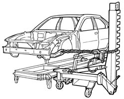
Example of a possible straightening bench configuration.
General repair instructions
Correct method for carrying out cutting operation
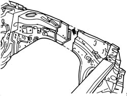
Hack-sawing machine
Example of the use of a hack-sawing machine
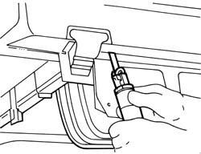
Oscillating circular saw
Example of an oscillating circular saw
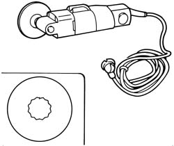
Power chisel
Example of the use of a power chisel
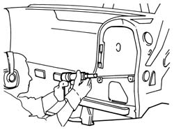
Electric drill
Example of the use of an electric drill
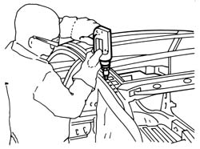
Example of the correct usage of a milling cutter
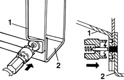
1 Panel to be removed 2 Box section panel preventing the use of a milling cutter.
Milling cutter
Example of the use of a milling cutter
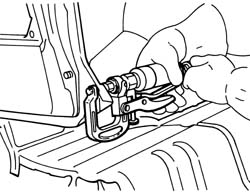
Welding replacement elements
Parts of the fuel system
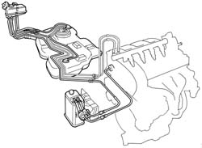
Spot welding
Spot welder, geometric characteristics of the electrode according to the thickness of the panel and the welding sequence.
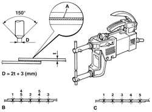
A- Electro-weldable galvanized protective coating B- Correct welding sequence C- Incorrect welding sequence D- Electrode dimension
Table of reference values for carrying out spot welds
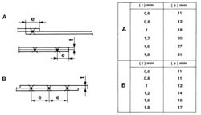
A. Table for determining the distance of the spot welds from the edges of the panels according to their thickness. B. Table of reference values for the correct spacing of the spot welds according to the thickness of the panel.
Example of correct spot welding at corners
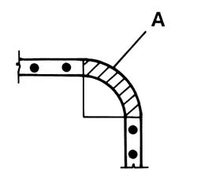
A- Area where welding should not be carried out
Operating methods
Carrying out a weld using inert gas (MIG) for joining two matched panels.
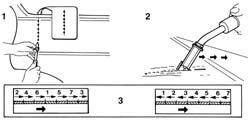
Carrying out inert gas (MIG) welding to join overlapping panels
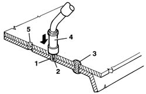
1 Area where panels are joined 2 Electrode 3 Weld spots 4 Torch 5. Hole (only for thick panels)
General instructions for exposed welding
Examples of welding
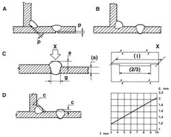
Air filtration and purification system
Example of a portable air filtration and penetration system
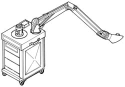
REPAIRING THE VEHICLE
PAINTING
Introduction
Filtration mask
Example of a filtration mask
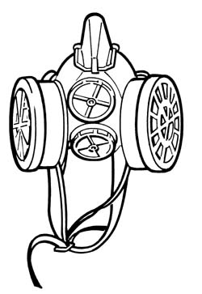
Pressurized mask
Example of a pressurized mask
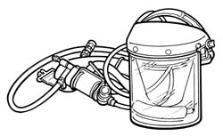
Spray guns
Using a spray gun
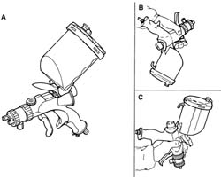
A- Normal method of use B- Use from the bottom to the top C- Use from the top to the bottom
Portable infra-red lamps
Drying a retouched area using a portable infra-red lamp
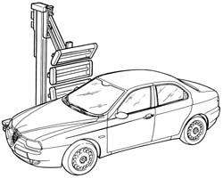
Polishers
Correct use of a polisher
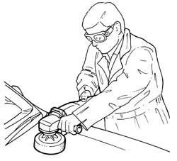
Renew the anti-corrosion/sound insulation/sealant treatments.
Equipment
Examples of application of sealant
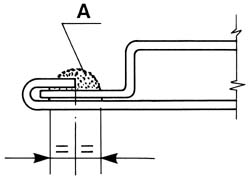
A- Sealant
REPAIRING THE VEHICLE
Vehicle identification data
Location of plates on the vehicle
Towing points
Location of tow hook threaded sockets
Vehicle lifting points
Position of vehicle lifting points
Vehicle repair operating cycles
Pulling the bodyshell
The bodyshell measurements are checked using templates, to be positioned at certain points, which are used to check the measurements against those given by the manufacturer for each model or, alternatively those given for the vehicle on the previous pages.
Example of a possible straightening bench configuration.
General repair instructions
Correct method for carrying out cutting operation
Hack-sawing machine
Example of the use of a hack-sawing machine
Oscillating circular saw
Example of an oscillating circular saw
Power chisel
Example of the use of a power chisel
Electric drill
Example of the use of an electric drill
Example of the correct usage of a milling cutter
1 Panel to be removed 2 Box section panel preventing the use of a milling cutter.
Milling cutter
Example of the use of a milling cutter
Welding replacement elements
Parts of the fuel system
Spot welding
Spot welder, geometric characteristics of the electrode according to the thickness of the panel and the welding sequence.
A- Electro-weldable galvanized protective coating B- Correct welding sequence C- Incorrect welding sequence D- Electrode dimension
Table of reference values for carrying out spot welds
A. Table for determining the distance of the spot welds from the edges of the panels according to their thickness. B. Table of reference values for the correct spacing of the spot welds according to the thickness of the panel.
Example of correct spot welding at corners
A- Area where welding should not be carried out
Operating methods
Carrying out a weld using inert gas (MIG) for joining two matched panels.
Carrying out inert gas (MIG) welding to join overlapping panels
1 Area where panels are joined 2 Electrode 3 Weld spots 4 Torch 5. Hole (only for thick panels)
General instructions for exposed welding
Examples of welding
Air filtration and purification system
Example of a portable air filtration and penetration system